인터넷정보관리사-2급 (2016-12-03 기출문제)
1과목: 인터넷의 이해
1. 다음 중 인터넷에 대한 설명으로 가장 거리가 먼 것은?
- 군사적 용도로 탄생했으나 현재는 상업적, 학술적 용도로 많이 활용된다.
- 사용할 수 있는 운영체제는 윈도우즈와 매킨토시 계열로 제한된다.
- 클라이언트/서버 시스템을 기반으로 한 분산 하이퍼텍스트 시스템이다.
- Archie, Gopher, Telnet등의 서비스가 있다.
(정답률: 71%)

2. 다음 중 국내외 인터넷 역사에 대한 설명으로 알맞은 것은?
- 1969년 – 영국에서 국방 및 군사목적으로 ARPANET 개발
- 1982년 – KIET와 서울대학교 간 SDN 구축
- 1990년 – HANA/SDN 망 설립으로 인터넷 사용 시작
- 1991년 – DNS 개념 도입
(정답률: 45%)
3. 다음 중 인터넷의 특징에 대한 설명으로 알맞은 것은?
- 정보를 쉽고 빠르게 교환할 수 있는 개방형 네트워크 구조이다.
- 주로 군사적 용도로 사용된다.
- 보안을 위해 인터넷을 통제하는 중앙 통제기구가 있다.
- 인터넷에 연결된 컴퓨터를 구분하기 위해 FTP를 사용한다.
(정답률: 84%)
4. 다음 중 인터넷 주소 체계에 대한 설명으로 알맞은 것은?
- IPv6 주소가 사용되고 부터는 IPv4 주소는 사용되지 않는다.
- IPv4는 32비트 체계이다.
- 기본구조는 네트워크 ID와 인터페이스 ID로 구분된다.
- IPv4주소는 네트워크의 크기나 호스트의 수에 따라 4개의 클래스로 나뉜다.
(정답률: 50%)
5. 다음 설명에 해당하는 IPv6의 유형은 무엇인가?
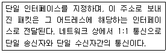
- 유니캐스트
- 애니캐스트
- 멀티캐스트
- 더블캐스트
(정답률: 48%)
6. 다음 중 도메인 신규 등록에 필요한 순서를 알맞게 나열한 것은?
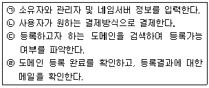
- ㉢ ⟶ ㉡ ⟶ ㉠ ⟶ ㉣
- ㉠ ⟶ ㉢ ⟶ ㉡ ⟶ ㉣
- ㉢ ⟶ ㉠ ⟶ ㉡ ⟶ ㉣
- ㉠ ⟶ ㉡ ⟶ ㉣ ⟶ ㉢
(정답률: 48%)
7. 다음 중 TCP/IP의 계층으로 가장 거리가 먼 것은?
- 네트워크 접근 계층
- 트랜스포트 계층
- 응용계층
- 제어계층
(정답률: 34%)
8. 다음 중 전자우편 프로토콜에 대한 설명으로 가장 거리가 먼 것은?
- SMTP : 텍스트 외에 그림, 음성 등의 멀티 미디어 기능을지원하는프로토콜이다.
- POP3 : 원격 서버로부터 TCP/IP 연결을 통해 이메일을 가져오는데 사용된다.
- IMAP : 온라인/오프라인을 모두 지원하여 이메일을 서버에 남겨 두었다가 나중에 지울 수 있다.
- MIME : ASCII가 아닌 문자 인코딩을 이용하여 영어가 아닌 다른 언어로 된 전자 우편을 보낼 수 있는 방식을 정의한다.
(정답률: 29%)
9. 다음 중 소셜 미디어 개념과 가장 거리가 먼 것은?
- 사회적 관계 개념을 인터넷 공간으로 확대한 것이다.
- 사람과 사람과의 관계를 지향하는 서비스를 총칭한다.
- 웹 3.0기술 기반의 서비스를 말하며 지능화, 개인화된 가상현실, 증강현실 등이 있다.
- 자신의 생각, 의견, 경험 등을 공유하기 위해 사용하는 플랫폼이다.
(정답률: 75%)
10. 다음 중 소셜 미디어의 특징에 대한 설명으로 가장 거리가 먼 것은?
- 기관의 대표성을 지닌 공지 성격의 정보를 전파할 수 있다.
- 소셜 미디어의 활용을 통한 광고비의 절감 효과를 가져 올 수 있다.
- 개인 사생활이 노출될 염려가 없으므로 사생활 침해로부터 자유롭다.
- 게시글의 전파속도가 매우 빠르며 컨텐츠의 공유가 가능하다.
(정답률: 82%)
11. 다음 중 개인의 트위터, 페이스북, 블로그 등과 같은 서비스를 포함한 온라인 활동과 다양한 주제에 대한 영향력을 숫자로 평가한 것은?
- 소셜 리넘버
- 소셜 갤럽
- 소셜 미디어
- 소셜 스코어
(정답률: 43%)
12. 다음 중 클라우드 컴퓨팅에 대한 설명으로 가장 거리가 먼 것은?
- 서버, 스토리지, S/W 등을 소유하지 않고, 필요 시 서비스 형태로 이용하는 방식이다.
- 컴퓨터의 리소스를 가상화하여 IT 자원을 필요한 만큼 빌려 쓰고 비용을 지급하는 방식이다.
- 컴퓨터 가용률이 낮은 편이기 때문에 IT 서비스의 전략과 일치한다.
- 서버가 공격당할 경우, 개인정보가 유출될 수 있는 단점이 있다.
(정답률: 60%)
13. 다음에서 설명하는 클라우드 컴퓨팅 관련 기술은 무엇인가?
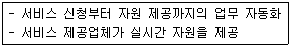
- 다중 공유모델
- 자원 유틸리티
- 서비스 프로비저닝
- 오픈 인터페이스
(정답률: 60%)
14. 다음 중 클라우드 컴퓨팅 서비스의 운용 형태로 가장 거리가 먼 것은?
- 하이브리드 클라우드
- 인터랙티브 클라우드
- 퍼블릭 클라우드
- 프라이빗 클라우드
(정답률: 61%)
15. 인터넷 비즈니스 성장에 따라 생겨난 용어로 기업 및 개인에게 전산 설비나 네트워크 설비 등을 임대하거나 유지, 보수 등의 서비스를 제공하는 곳을 가리키는 말은?
- ISP
- IDC
- eBIZ
- DRM
(정답률: 32%)
16. 다음 중 특정 분야의 컴퓨터 또는 프로그램에 해당하는 것이 아닌 것은?
- 딥 러닝(Deep Learning)
- 알파고(AlphaGo)
- 딥 블루(Deep Blue)
- 왓슨(Watson)
(정답률: 32%)
17. 다음은 무엇에 대한 설명인가?
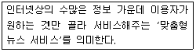
- IoT
- VoIP
- SSO
- RSS
(정답률: 73%)
18. 다음 개인정보 유형 중 신용정보와 가장 거리가 먼 것은?
- 신용카드
- 지불연기 및 미납의 수
- 기타소득의 원천
- 임금압류 통보에 대한 기록
(정답률: 53%)
19. 다음 중 개인정보처리자가 정보주체로부터 개인정보 수집·이용에 관한 동의를 받고자 할 때, 정보주체에게 반드시 알려야할 사항과 가장 거리가 먼 것은?
- 개인정보의 수집ㆍ이용 목적
- 고유식별정보의 처리 방법
- 개인정보의 보유 및 이용 기간
- 동의를 거부할 권리가 있다는 사실
(정답률: 52%)
20. 다음 중 저작재산권에 포함되는 권리와 가장 거리가 먼 것은?
- 2차적 저작물 작성권
- 공중송신권
- 동일성 유지권
- 공연권
(정답률: 37%)
21. 다음 중 저작권 발생과 관련된 내용으로 부적합한 것은?
- 저작권은 저작물이 공식적으로 발표된 때부터 발생한다.
- 어떠한 절차나 형식적 요건을 필요로 하지 않는다.
- 저작권 등록은 저작권이 발생하기 위한 조건으로 요구되는 것은 아니다.
- 저작자가 생존하는 동안과 사후 70년간 보호된다.
(정답률: 34%)
22. 다음 중 괄호 안에 적합한 단어로 알맞은 것은?
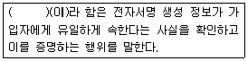
- 가입자
- 인증서
- 인증
- 서명자
(정답률: 59%)
23. 다음 중 공인인증서에 포함되어 있는 내용으로 가장 거리가 먼 것은?
- 가입자 이름
- 가입자 주민등록번호
- 인증서 유효기간
- 인증서 일련번호
(정답률: 74%)
24. 다음 중 운영체제의 성능 평가 기준으로 가장 거리가 먼 것은?
- 신뢰도 향상
- 처리 능력 향상
- 응답 시간 증가
- 사용 가능도 향상
(정답률: 73%)
25. 다음 중 운영체제의 운영기법에 대한 설명으로 가장 알맞은 것은?
- 일괄처리 – 중앙처리장치들이 협력하여 하나 이상의 여러 작업들을 동시에 처리하는 병렬방식
- 실시간 처리 – 데이터 발생과 동시에 처리하여 결과를 데이터가 발생한 곳에 되돌려 보내는 방식
- 다중처리–일련의 데이터를 모았다가 일정한 시간이 되면 정해진 순서에 따라 처리하는 방식
- 시분할처리 – 중앙처리장치를 번갈아 사용하면서 처리하여 컴퓨터 자원을 최대로 활용하는 처리방식
(정답률: 36%)
26. 다음 중 정식 제품 구매 전에 먼저 체험해 볼 수 있도록 사용 기간이나 특정기능에 제한을 둔 소프트웨어는?
- 프리웨어
- 셰어웨어
- 멀웨어
- 그룹웨어
(정답률: 52%)
27. 다음 중 네트워크 서비스 공급업체의 SLA(서비스 수준 협약)에 포함되는 척도와 가장 거리가 먼 것은?
- 주파수 대역에 관한 정보
- 서비스될 수 있는 시간 비율(%)
- 다이얼업 접속 가능성
- 제공될 사용량 통계
(정답률: 29%)
28. 다음 중 비동기식 자바스크립트를 뜻하는 AJAX의 장점으로 바르지 않은 것은?
- 단순한 사용자의 응답으로 페이지 전체를 다시 수정하는 등의 비효율성을 줄일 수 있다.
- 스크립트로 작성되므로 디버깅이 매우 용이하다.
- 전체적인 웹 서버 처리량도 줄어들게 된다.
- 응용 프로그램의 응답성이 좋아진다.
(정답률: 34%)
29. 다음 URL 기본 구성에 대한 설명으로 가장 거리가 먼 것은?
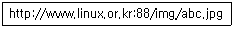
- http://는 하이퍼텍스트 전송 프로토콜을 의미한다.
- linux.or.kr은 도메인명이다.
- 도메인명, 디렉터리명, 파일명은 모두 대소문자를 구분한다.
- img/abc.jpg는 디렉터리/파일명에 해당된다.
(정답률: 74%)
30. 다음 그래픽 기반의 HTML 저작 도구에 대한 설명으로 가장 거리가 먼 것은?
- 나노 웹 에디터 – Style Sheet, Java Script, 수식, 이미지 맵, 브라우저로 미리보기 등의 다양한 기능을 제공한다.
- 프론트 페이지 – 호주의 Sausage사에서 개발한 웹 에디터로 Dynamic HTML, ASP 등을 지원한다.
- 구글 웹 디자이너 – HTML5 개발을 손 쉽게 할 수 있도록 개발한 위지윅 기반의 웹 저작도구
- 플래시 – 벡터 기반의 웹사이트를 제작할 수 있는 저작도구
(정답률: 32%)
31. 다음 중 개체 관련 태그와 그 기능이 알맞게 짝지어진 것은?
- <object> - 개체의 파라미터
- <param> - 개체 삽입
- <embed> - 멀티미디어 재생
- <applet> - 오디오 재생
(정답률: 55%)
32. 다음 중 웹 브라우저에서 자체적으로 지원하는 이미지 파일 형식이 아닌 것은?
- PNG
- GIF
- JPG
- CDR
(정답률: 86%)
33. 다음 중 웹 브라우저에서 동영상이나 사운드 등의 멀티미디어 데이터를 재생하기 위해 별도로 설치하는 것은?
- CGI 프로그램
- ASP 프로그램
- 자바 프로그램
- 플러그인 프로그램
(정답률: 59%)
2과목: 인터넷 자원 탐색
34. 다음 웹 브라우저에 대한 설명 중, 알맞은 것을 모두 고른 것은?
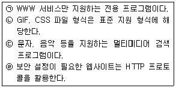
- ㉠, ㉡
- ㉠, ㉣
- ㉡, ㉢
- ㉢, ㉣
(정답률: 44%)
35. 다음 설명하는 웹 브라우저 관련 용어는?
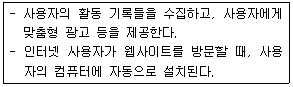
- RSS 피드
- 포털 사이트
- 프록시 서버
- 쿠키
(정답률: 30%)
36. 다음 웹 브라우저 중 사용자와의 인터랙티브 방식이 다른 하나는?
- 첼로
- 모자익
- 핫자바
- 아라크네
(정답률: 57%)
37. 다음 설명에 해당하는 웹 브라우저는?
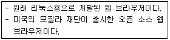
- 삼바
- 사파리
- 파이어 폭스
- 인터넷 익스플로러
(정답률: 72%)
38. 다음 사례에 적절한 인터넷 익스플로러의 기능은?
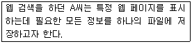
- 즐겨찾기
- 웹 페이지 저장
- 오프라인으로 작업
- 웹 페이지 보관 파일
(정답률: 35%)
39. 다음 중 공용 PC에서의 개인정보를 보호하기 위한 인터넷 익스플로러의 기능으로 가장 적절한 것은?
- 크로스 브라우징
- InPrivate 브라우징
- 팝업 차단
- 성능 대시보드
(정답률: 78%)
40. 인터넷 익스플로러 11에서 (가)를 클릭한 뒤, 바로 선택할 수 있는 기능은?
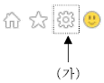
- 커서 브라우징
- ActiveX 필터링
- 호환성 보기 설정
- 가져오기 및 내보내기
(정답률: 54%)
41. 다음 설명에 해당하는 인터넷 익스플로러 보안 영역은?
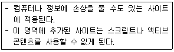
(정답률: 74%)
42. 다음과 같은 역할을 수행하는 크롬 브라우저의 기능은?
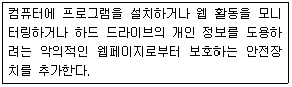
- 맞춤설정
- 샌드박스
- 시크릿창
- 옴니박스
(정답률: 37%)
43. 다음 중 인터넷 익스플로러에서 크롬 브라우저로 가져올 수 있는 항목을 모두 고른 것은?
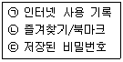
- ㉠
- ㉡
- ㉠, ㉢
- ㉠, ㉡, ㉢
(정답률: 57%)
44. 다음 중 파이어폭스의 웹브라우징 기능에 대한 설명으로 알맞은 것을 모두 고른 것은?
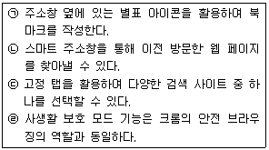
- ㉠, ㉡
- ㉠, ㉣
- ㉡, ㉢
- ㉢, ㉣
(정답률: 34%)
45. 다음의 기능을 실행할 수 있는 파이어폭스 아이콘으로 옳은 것은?
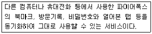
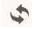
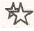
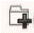
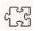
(정답률: 72%)
46. 다음 중 검색엔진에 대한 설명으로 알맞은 것을 모두 고른 것은?
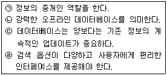
- ㉠, ㉡
- ㉠, ㉣
- ㉡, ㉢
- ㉢, ㉣
(정답률: 70%)
47. 다음 사례에 대한 이유로 적절한 것만을 모두 고른 것은?
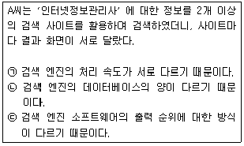
- ㉠
- ㉡
- ㉡, ㉢
- ㉠, ㉡, ㉢
(정답률: 72%)
48. 다음 설명에 해당하는 검색엔진의 구성요소는?
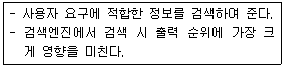
- 로봇
- 검색기
- 색인기
- 카탈로그
(정답률: 35%)
49. 다음 중 검색 엔진의 로봇이 주기적으로 방문하는 곳으로 적절한 예를 모두 고른 것은?
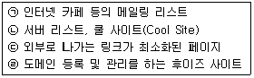
- ㉠, ㉡
- ㉠, ㉢
- ㉡, ㉣
- ㉢, ㉣
(정답률: 44%)
50. 다음 중 robots.txt에 입력할 로봇 배제 표준중 '배제'의 의미를 갖는 예약어는?
- User-agent :
- Disallow :
- Terminate :
- allow-agent :
(정답률: 68%)
51. 다음 중 검색엔진의 구축방식 중 매뉴얼 인덱스 방식에 대한 설명으로 알맞은 것을 모두 고른 것은?
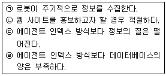
- ㉠, ㉡
- ㉠, ㉢
- ㉡, ㉣
- ㉢, ㉣
(정답률: 58%)
52. 다음 중 단어별 검색 엔진에 대한 설명으로 알맞은 것은?
- 디렉터리 검색엔진이라고도 한다.
- 이용자가 직접 자신의 웹페이지의 정보들을 등록한다.
- 주제별 검색엔진에 비해 상대적으로 데이터 베이스의 양이 적다.
- 로봇 에이전트가 웹 페이지 정보를 미리 수집·분류·저장한다.
(정답률: 44%)
53. 다음 검색 엔진 중 나머지 셋과 다른 검색 엔진은?
- 메타 검색엔진
- 지능형 검색엔진
- 멀티스레드 검색엔진
- 하이브리드 검색엔진
(정답률: 41%)
54. 다음 설명이 해당하는 검색 결과의 제공방식은?
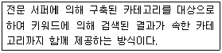
- 지식 검색
- 사이트 검색
- 디렉터리 검색
- 웹 페이지 검색
(정답률: 83%)
55. 다음 설명에 해당하는 키워드 배치 전략은?
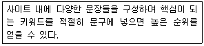
- 키워드 근접
- 키워드 돌출
- 키워드 무게
- 키워드 연관
(정답률: 40%)
56. 다음 중 네이버 서비스 '실시간 급상승 검색어 서비스'에 대한 설명으로 알맞은 것을 모두 고른 것은?
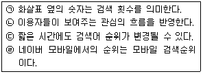
- ㉠, ㉡
- ㉠, ㉣
- ㉡, ㉢
- ㉢, ㉣
(정답률: 64%)
57. 다음에서 설명하는 구글의 제공 서비스는?
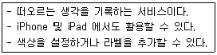
- 행아웃
- 구글어스
- AdWords
- Google Keep
(정답률: 49%)
58. 다음 중 정보 검색에 대한 설명으로 알맞은 것은?
- 검색엔진은 인터넷 상의 모든 정보를 찾는다.
- 리키지를 최대화할 수 있도록 검색한다.
- 검색한 정보에 대한 저작권의 유무에 주의해야 한다.
- 검색 대상에 대한 기초 지식이나 범위는 중요치 않다.
(정답률: 14%)
59. 다음 중 검색엔진에서 '검색'에 해당되는 동작으로 알맞은 것은?
- 그룹핑
- 링크추출
- 온라인색인
- 형태소분석
(정답률: 15%)
60. 다음 중 정보검색의 발전 모델에서 3단계(하이브리드)의 발전 내용에 해당하는 것은?
- 자연어처리(NLP)
- 정보 접근성 위주
- 정보의 의미 해석
- 정보와 경험과 유통을 결합
(정답률: 29%)
61. 다음 중 정보관리(검색)사의 역할에 해당하는 것을 모두 고른 것은?
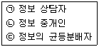
- ㉠
- ㉡
- ㉠, ㉢
- ㉠, ㉡, ㉢
(정답률: 58%)
62. 다음 설명에 해당하는 정보 검색 용어는?
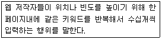
- 개비지
- 자연어
- 불용어
- 스패밍
(정답률: 70%)
63. 다음 정보의 유형 중, '이용주체에 따른 분류'에 해당하는 유형은?
- 3차 정보
- 외부 정보
- 의미 정보
- 수단적 정보
(정답률: 46%)
64. 다음 중 정보원으로 데이터베이스를 선정할 때 중요한 요소를 모두 고른 것은?
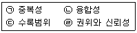
- ㉠, ㉡
- ㉠, ㉣
- ㉡, ㉢
- ㉢, ㉣
(정답률: 48%)
65. 다음 설명에 해당하는 인터넷 정보원은?
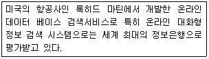
- NTIS
- KIPRIS
- DIALOG
- Fed World
(정답률: 32%)
66. 다음 중 정보 검색 노하우에 적합한 방법을 모두 고른 것은?
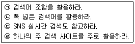
- ㉠, ㉡
- ㉠, ㉢
- ㉡, ㉣
- ㉢, ㉣
(정답률: 44%)
3과목: 인터넷 윤리
67. 다음 중 인터넷 이용에 따른 역기능의 유형과 가장 거리가 먼 것은?
- 해악금지
- 인격침해
- 정보침해
- 인터넷 중독
(정답률: 66%)
68. 다음에서 설명하는 인터넷 윤리의 기능은?
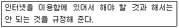
- 예방윤리
- 처방윤리
- 변혁윤리
- 책임윤리
(정답률: 40%)
69. 다음 중 버지니아 셰어 교수가 제시한 네티켓의 대표 원칙으로 가장 거리가 먼 것은?
- 전문적 지식을 공유하라
- 다른 사람의 시간을 존중하라
- 논쟁은 절제된 감정아래 행하라
- 실제생활에서 적용된 것과 명확히 구분되는 기준과 행동을 고수하라
(정답률: 60%)
70. 다음 중 블로그를 운영할 때의 네티켓과 가장 거리가 먼 것은?
- 공개 설정 범위를 직접 확인하고 설정한다.
- 기사의 내용을 인용할 때에는 출처를 밝힌다.
- 촬영한 개인사진, 동영상 등의 정보는 누구나 볼 수 있도록 공개한다.
- 업로드한 정보는 빠르게 확산되어 삭제가 쉽지 않다는 것을 명심한다.
(정답률: 73%)
71. 다음 중 사이버 명예훼손에 대한 설명으로 가장 거리가 먼 것은?
- 다른 사람을 비방할 목적일지라도, 인터넷 상에 그 사람에 대한 사실을 쓴 경우에는 성립되지 않는다.
- 다른 사람의 명예를 훼손한 경우라도 내용이 진실하고 공익적이라면 처벌하지 않기도 한다.
- 피해자가 가해자의 처벌을 원하지 않는다는 의사표시를 하면 처벌하지 않는다.
- 정보통신망 이용촉진 및 정보보호 등에 관한 법률에 의거 처벌 받는다.
(정답률: 41%)
72. 다음 중 사이버 범죄의 특징과 가장 거리가 먼 것은?
- 개방성
- 지연성
- 비물질성
- 비대면성
(정답률: 46%)
73. 다음 설명에 해당하는 전자금융사기 유형은?
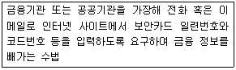
- 비싱
- 파밍
- 피싱
- 메모리해킹
(정답률: 49%)
74. 다음은 어떤 악성프로그램에 대해 방송에서 보도된 화면이다. 이 악성프로그램을 가리키는 말은?
- 멀웨어
- 스파이웨어
- 랜섬웨어
- 스플로거
(정답률: 50%)
75. 다음 중 인터넷 중독의 과정을 올바르게 나열한 것은?
- 인터넷에 심취하기 → 인터넷을 통해 대리 만족 → 현실 탈출
- 현실 탈출 → 인터넷에 심취하기 → 인터넷을 통해 대리 만족
- 인터넷에 심취하기 → 현실 탈출 → 인터넷을 통해 대리 만족
- 현실 탈출 → 인터넷을 통해 대리 만족 → 인터넷에 심취하기
(정답률: 59%)
76. 다음 중 킴벌리 영이 분류한 인터넷 중독의 유형에 속하는 것은?
- 정보 검색 중독
- 인터넷 게임 중독
- 사이버 거래 중독
- 사이버 교제 중독
(정답률: 40%)
77. 다음에서 설명하는 인터넷 중독 증상은?
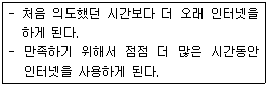
- 금단
- 내성
- 일탈 행동
- 강박적 사용과 집착
(정답률: 45%)
78. 다음 중 인터넷 중독을 예방하는 방법으로 알맞은 것은?
- 시계가 없는 방에 컴퓨터를 설치한다.
- 컴퓨터 사용시간에 제한을 두지 않는다.
- 컴퓨터를 사용한 후에 다른 해야 할 일을 한다.
- 일정한 목적을 가지고 있을 때에만 컴퓨터를 켠다.
(정답률: 70%)
79. 다음 중 유저가 게임에 장시간 몰입해서 즐기는 것을 막기 위한 것으로, 일정량 이상 게임을 즐기면 게임 내에서 얻을 수 있는 이득이 줄어드는 제도를 가리키는 말은?
- 인터넷 실명제
- 피로도 시스템
- 쿨링오프제
- 셧다운제
(정답률: 55%)
80. 다음 중 인터넷 과다 사용의 위험을 깨닫고 스스로 조절하고 계획적으로 사용하도록 노력해야 하는 인터넷 중독 사용자군은?
- 고위험 사용자군
- 표면적 위험 사용자군
- 잠재적 위험 사용자군
- 일반 사용자군
(정답률: 14%)